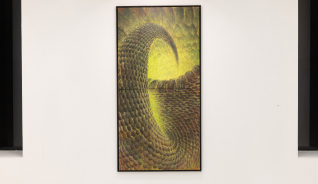
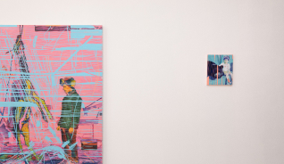
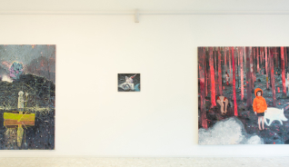
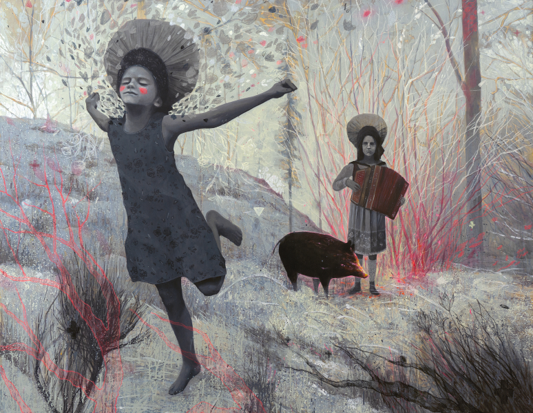
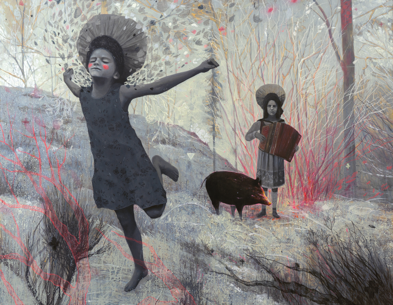

Exhibitions


Sove niso, kar se zdijo
Galerija Miklova hiša v Ribnici, Ribnica
2022
Balkanske obljube
Galerija Y, Ljubljana
2022
Žival sem, ujeta v tvoj vroč beton
Galerija Kresija, Ljubljana
2020
Prazne so grape
Mestna Galerija Nova Gorica, Nova Gorica
2020
Solo exhibitions
Group exhibitions
 
